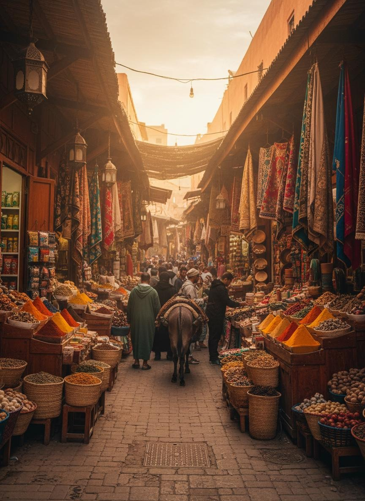

⚡ Marrakech Highlights & Private Exclusives
- Insider Medina Walking Tour: Unlock centuries-old secret courtyards, the 19th-century Bahia Palace, and the Saadian Tombs with a licensed historian.
- Master Artisan Souk Encounters: Meet genuine woodworkers, leather tanners, and copper craftsmen without high-pressure sales tactics.
- Jardin Majorelle & YSL Museum: Skip-the-line VIP access to Jacques Majorelle’s cobalt botanical garden and Yves Saint Laurent's haute couture archive.
- Agafay Desert Sunset Dinner: Private 45-minute drive into the stone desert for sunset dromedary camel rides and a candlelit nomad feast.
- High Atlas Day Escapes: Optional day trip to the scenic Ourika Valley or Imlil for fresh mountain air and traditional Berber home cooking.
Experience Marrakech Without the Stress
Marrakech is an exhilarating sensory explosion: the scent of cedarwood and orange blossom, the call to prayer echoing from the 12th-century Koutoubia minaret, and the intoxicating theater of Jemaa el-Fnaa square. Yet for many first-time travelers, navigating the Medina alone can become overwhelming.
Our approach transforms your Marrakech stay from chaotic to effortless. We pair you with an articulate, licensed local host who grew up inside the Medina walls. You walk at your personal rhythm, learning the profound Islamic architecture and Jewish Mellah heritage that most tourists completely miss.
"Marrakech is a city of hidden interiors. The rough clay walls on the outside give zero hint of the breathtaking marble fountains and fragrant zellige courtyards tucked just behind the cedar doors."
— ROAM MOROCCO MEDINA JOURNALBeyond the ancient walls, our private chauffeur stands by in an executive air-conditioned vehicle to whisk you away to the Palmeraie, the art foundations of Gueliz, or the moon-like dunes of the Agafay Desert for sunset cocktails.
Sample 3-Day Curated Marrakech Circuit ZERO HOTEL PACKING
The Imperial Heritage & Secret Souks
Meet your private licensed guide after a rooftop breakfast at your riad. Explore the stunning zellige tilework of the Bahia Palace, the 16th-century Saadian Tombs, and the historic Jewish Mellah. Wander deeper into the specialized artisan quarters—from the dyers’ souk to the spice market of Rahba Kedima. Savor lunch at an exclusive courtyard terrace before taking in sunset over Jemaa el-Fnaa.
Majorelle Gardens → YSL Museum → Agafay Luxury Camp
Your chauffeur picks you up at 09:30 AM for a morning visit to Jardin Majorelle and the Yves Saint Laurent Museum. In the afternoon, enjoy leisure time at your riad pool or a traditional Moroccan hammam. At 16:00, drive 45 minutes into the lunar Agafay Desert. Take a sunset camel ride across stone dunes, followed by fine dining and live acoustic Berber music under the Saharan constellation.
Ourika Valley & Setti Fatma Waterfalls OR Departure
Escape the city heat on a scenic 1-hour drive into the High Atlas foothills. Follow the tumbling Ourika river, explore terraced walnut orchards, and visit a traditional Berber family home for fresh mint tea and homemade bread with olive oil and honey. Return to Marrakech in late afternoon for boutique shopping or seamless airport drop-off.
What's Included in Your Private Marrakech Package
✔ INCLUDED
- Licensed English-speaking Marrakech historical guide
- Dedicated private air-conditioned transport & driver
- Skip-the-line monument entries (Bahia, Saadian Tombs)
- Agafay Desert private round-trip transfer & sunset dinner
- Complimentary airport pickup & riad baggage assistance
- Insider recommendations for vetted riads & restaurants
✕ NOT INCLUDED
- Jardin Majorelle timed tickets (booked in advance upon request)
- Mid-day lunches and personal alcohol
- Discretionary tips for guides, drivers, and riad staff
- Personal spa/hammam treatments
Frequently Asked Questions: Marrakech Private Tours
How many days should I spend in Marrakech?
We recommend at least 3 full days. This allows 1 full day for the ancient Medina and historical palaces, 1 day for modern Marrakech (Majorelle, Gueliz) and the Agafay desert sunset, and 1 day for a refreshing day trip to the High Atlas mountains or Essaouira.
Is it safe to walk around Marrakech at night?
Yes. Marrakech is generally very safe, and Jemaa el-Fnaa comes alive after dark with families, musicians, and food stalls. Main thoroughfares are well-lit and heavily policed. As in any major destination, keep your belongings close in crowded areas.
Can we customize this tour to include cooking classes or a hammam?
Absolutely. Every itinerary we design is 100% bespoke. We can easily arrange an authentic riad culinary masterclass, a luxury royal hammam ritual, or early morning hot air balloon rides over the desert plains.